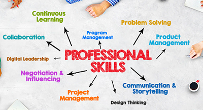

Skills for the Future: Preparing for Tomorrow's Job Market
By David Lee
Published on October 5, 2024
Introduction
The job market is evolving at an unprecedented rate, driven by technological advancements and changing global dynamics. To stay competitive, professionals must continuously adapt and acquire new skills. This article explores the key skills that will be crucial for success in the future job market.
Key Skills for the Future
- AI and Machine Learning Literacy: Understanding and working with AI systems
- Data Analysis: Interpreting and utilizing big data
- Digital Literacy: Proficiency with emerging technologies
- Cybersecurity: Protecting digital assets and information
- Sustainability and Green Tech: Implementing eco-friendly practices
The Importance of Soft Skills
While technical skills are crucial, soft skills remain equally important:
- Emotional Intelligence: Understanding and managing emotions
- Creativity and Innovation: Thinking outside the box
- Critical Thinking: Analyzing information and solving complex problems
- Adaptability: Embracing change and learning quickly
- Collaboration: Working effectively in diverse teams
Continuous Learning and Adaptability
The future job market demands a commitment to lifelong learning:
- Embrace a growth mindset
- Stay updated with industry trends
- Participate in online courses and webinars
- Seek mentorship and networking opportunities
Resources for Skill Development
There are numerous resources available for developing future-ready skills:
- Online learning platforms (e.g., Coursera, edX, Udacity)
- Professional certifications
- Industry conferences and workshops
- Company-sponsored training programs
Conclusion
As the job market continues to evolve, the ability to adapt and acquire new skills will be crucial for professional success. By focusing on both technical and soft skills, embracing continuous learning, and staying informed about industry trends, individuals can position themselves for success in the dynamic job market of the future.
For more information on future skills, visit Example Future Skills Report.